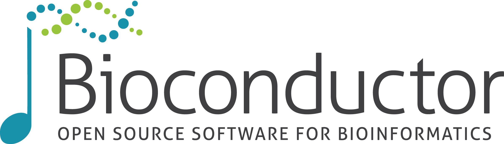
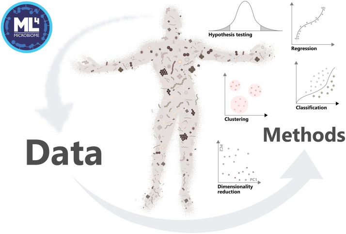

Orchestrating Microbiome Analysis with Bioconductor
Leiden, October 2026
Orchestrating Microbiome Analysis with Bioconductor
TNO, Leiden, Oct 5–7, 2026 (Mon–Wed)
Daily: ~9:00–16:00 (lectures + demos + hands-on)


Code of Conduct
Bioconductor community values:
- sharing of ideas, code, software, and expertise
- collaboration
- diversity and inclusivity
- a kind and welcoming environment
Full CoC: https://bioconductor.github.io/bioc_coc_multilingual/
Course overview
The course provides a gentle introduction to microbiome and multi-omic data science with R/Bioconductor, focusing on:
- reproducible data analysis workflows
- standardized data containers for biomedical data integration
- how to approach new analysis tasks using documentation + existing tools
Emphasize: you don’t need to know everything—learn the ecosystem and how to navigate.
Learning goals
After the course, you will be able to:
- use Bioconductor data infrastructure for omics data analysis
- work with standardized containers for single-omics and multi-omics
- build reproducible workflows with Quarto
- continue learning independently using the OMA documentation
Materials & links
- OMA book: https://bioconductor.org/books/release/OMA/
- https://orchestraplatform.org/ (by Sean Davis)
Practicalities
- Each topic: short lecture + demonstration
- Majority of time: hands-on exercises
- Help available during exercises
- Materials remain available after the course
Schedule overview
Day 1: Reproducible workflows with R/Bioconductor and Quarto
Day 2: Tabular data analysis (working with single ’omics)
Day 3: Multi-assay data integration (multi-omics methods)
Day 1 — Open data science
Day 1 — Open data science
| Time | Activity |
|---|---|
| 9:00–10:00 | Coffee, welcome & practicalities |
| 10:00–11:00 | Introduction to CSC RStudio notebook |
| 11:00–12:00 | Lecture: open & reproducible workflows |
| 12:00–13:00 | Lunch break |
| 13:00–16:00 | Working with data containers and workflows |
Learning goals
- Understand principles of open & reproducible microbiome/omics analysis
- Become familiar with the Bioconductor ecosystem
- Learn the role of standardized data containers for omics data
Microbiome research
- Microbiome: community of microbes and their genes in certain habitat (e.g., human gut)
- Vital role
- Data typically sequencing profiles, along with additional molecular layers

Tämä dia voi mennä muualle, mutta jos muistan oikein, olemme olettaneet edellisillä kursseilla, että ihmiset tietää, mikä on mikrobiomi. Se kannattaa käydä nopeasti alussa läpi.
Slides
Exercises
Day 1 — Wrap-up
- Reproducible & transparent reporting: makes analyses verifiable and easier to reuse, review, and extend (for you and others)
TreeSummarizedExperiment: standard container for microbiome data- Bioconductor provides interoperable packages built on shared data infrastructure
Feedback
Day 2 — Tabular data analysis
Day 2 — Tabular data analysis
| Time | Activity |
|---|---|
| 9:00–10:00 | Lecture: analysis & visualization of tabular data (single omics) |
| 10:00–12:00 | Subsetting, transformations, and data summaries |
| 12:00–13:00 | Lunch break |
| 13:00–14:00 | Univariate data analysis and visualization |
| 14:00–16:00 | Multivariate data analysis and visualization |
Learning goals
Calculate, visualize, and interpret
- alpha diversity
- beta diversity
- differential abundance/prevalence
Slides
Exercises
Day 2 — Wrap-up
- Alpha diversity:
mia::addAlpha()+miaViz::plotBoxplot() - Beta diversity ordination:
mia::addMDS()/mia::addRDA()+miaViz::plotOrdination()/miaViz::plotRDA() - Differential abundance analysis:
maaslin3::maaslin3()
Feedback

Day 3 — Multi-assay data integration
Day 3 — Multi-assay data integration
| Time | Activity |
|---|---|
| 9:00–10:00 | Lecture: analysis & visualization of multi-assay data (multi-omics) |
| 10:00–12:00 | Multi-assay data analysis and visualization |
| 12:00–13:00 | Lunch break |
| 13:00–15:00 | Q&A and advanced techniques (time series, machine learning, simulation) |
| 15:00–16:00 | Summary and wrap-up |
Learning goals
- Import multiomics data into
MultiAssayExperiment - Analyse and visualize multiomics data
Feedback

Channels
- Bioconductor community chat Zulip
- GitHub issues
- Email?
Acknowledgements